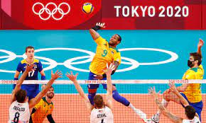
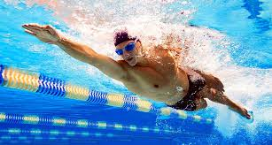
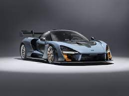
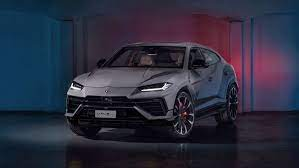
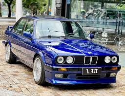

Seja Bem-Vindo! Me chamo David Guilherme Denunci, tenho 18 anos e estudo na Faculdade de Informática e Administração Paulista, mais conhecida como FIAP.
Este é um trabalho proposto pelo meu professor de HTML e CSS da faculdade, onde nós temos que criar uma página na web pessoal. Aproveite, espero que goste!
Agora, vou contar um pouco sobre mim. Sou nascido e criado em São Paulo-SP, moro com os meus pais, tenho uma irmã mais nova e namoro a quase 2 anos. Sou completamente apaixonado por esporte, faço academia há 8 meses, gosto muito de carro e corridas no geral, adoro viajar.
Clique nas imagens para poder acessar as seções:
Seção Esportes
Eu como já dito, sou apaixonado por esportes...
Na minha infância eu praticava judô, natação e futsal. Daí com o passar do tempo foquei no vôlei e no futsal e hoje em dia jogo também futevôlei.
Já na minha pré-adolescencia e na adolescencia eu continuei apenas com o futsal porém comecei a praticar vôlei e a correr de kart. Agora na minha vida de universitário eu jogo as vezes quando eu consigo com os meus amigos, e adicionei mais um esporte na lista, o futevôlei.
Durante todos esses anos consegui um total de 22 (vinte e dois) troféus individuais e mais de 50 (cinquenta)medalhas conquistdas juntando todos esses esportes, me sinto muito realizado e feliz por todas essas conquistas. Agora que não jogo masi competindo espero conseguir diversos prêmios e troféus na minha vida acadêmica e profissional.


Seção Viagens
Eu gosto muito de viajar...Já visitei vários lugares, mas mesmo assim eu continuo louco para conhecer novos lugares e novas culturas.
Em 18 anos tiva a oportunidade de conhecer algumas culturas diferentes mas continuo insatisfeito. Abaixo coloquei quais lugares eu ja visitei.
Minha primeira viagem intenacional eu fiz com os meus pais e minha avó materna, a gente foi de cruzeiro para a Argentina e depois passamos em Uruguai também, a segunda eu fui de avião apenas com os meus pais para o México, uma das melhores viagens da minha vida, vimos as pirâmides e várias outras coisas super antigas da comunidade Maia. Ainda quando criança fui para Maceió-AL; Natal-RN; Porto Seguro-BA e a minha viagem mais recente de avião foi para Florianópolis-SC. De carro ja viagei para Búzios-RJ e também para Bombinhas-SC, no estado de São Paulo já conheci, Guarujá; Caraguatatuba; Serra Negra; Cubatão e Ubatuba.
Quero muito conhecer os Estados Unidos; Canadá; Austrália; África do Sul; Egito e vários países da Europa, como, Alemanha; Espanha; França; Itália; Portugal e Inglaterra.
Seção Carros
Sempre foi uma paixão em minha vida, desde criança ver carros antigos e bonitos na rua.
Um dos meus maiores sonhos com certeza é ter vários carros em minha garagem, sempre fui muito fã de velocidade e carros.
Tudo começou com o meu pai, pois ele sempre amou carro e por muitos anos trabalhou em lojas de carro, então cada mês a gente estava usando um carro novo e diferentes dos outros usados. Minha paixão por velocidade e automobilismo começou depois de eu assistir com o meu primo o documentário do Ayrton Senna, aquilo me fez pensar e várias coisas e criou um sonho de ser piloto um dia.
Farei de tudo na minha carreira para que posso realizar meu sonho de ter vários carros diferentes e lindos em minha garagem.
Abaixo vou deixar imagens dos carros que eu mais gostaria de ter:



Obrigado por ter lido, espero que tenha gostado, até mais!